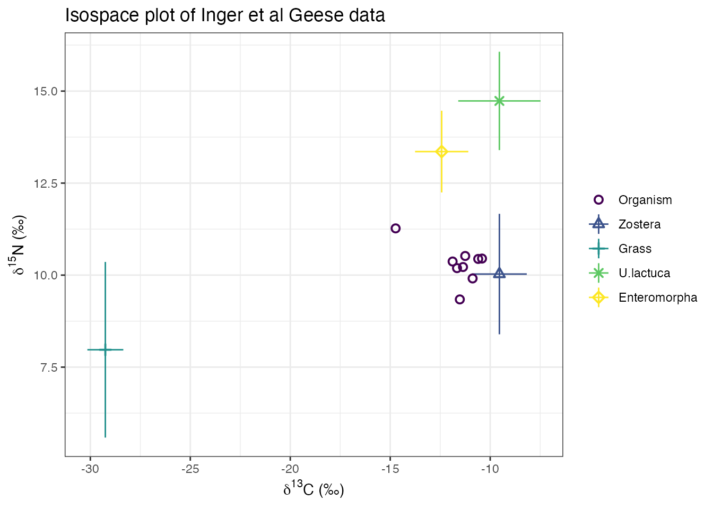
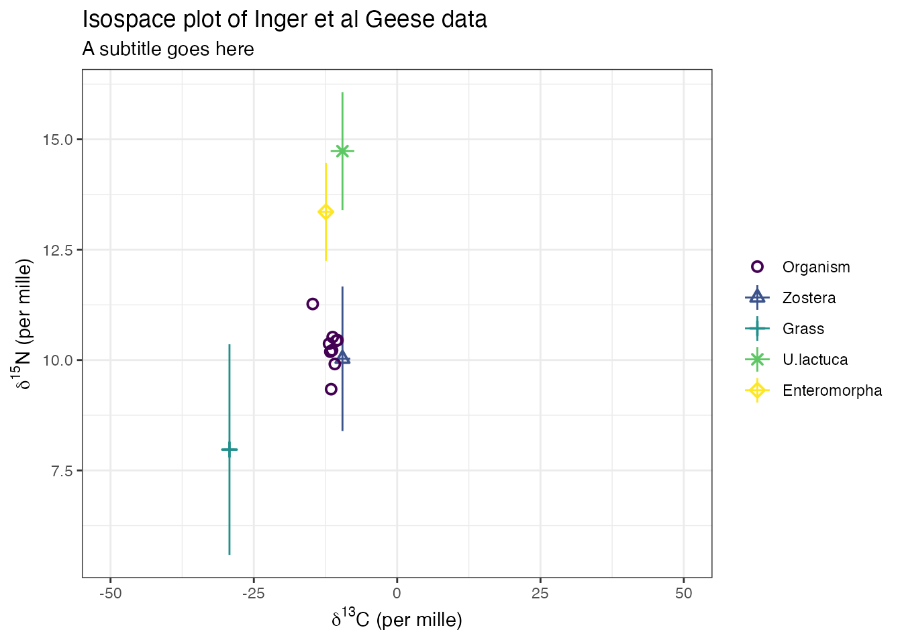
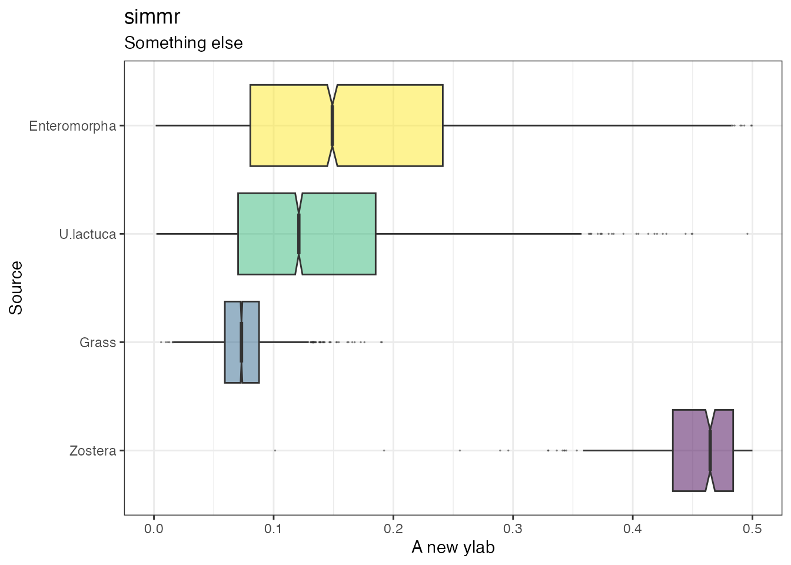
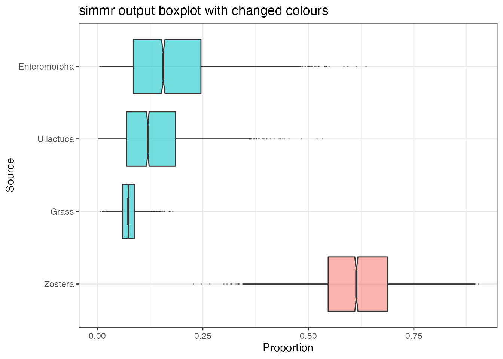
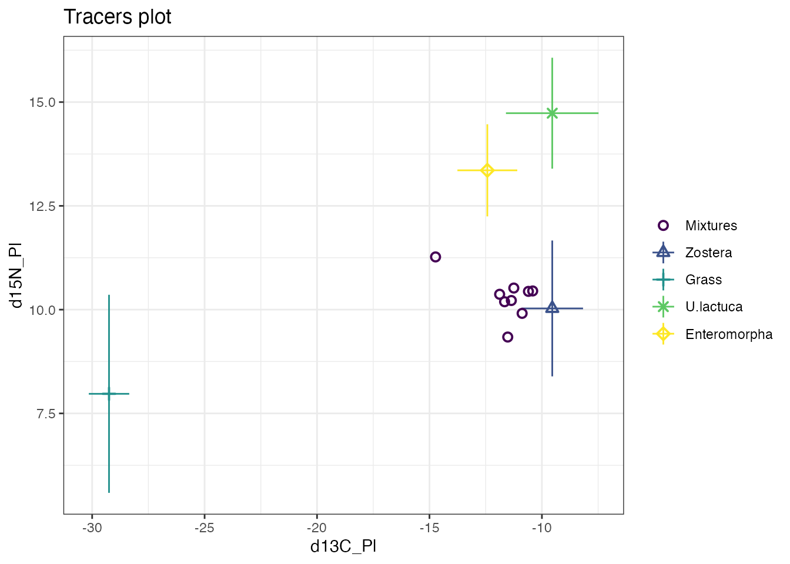
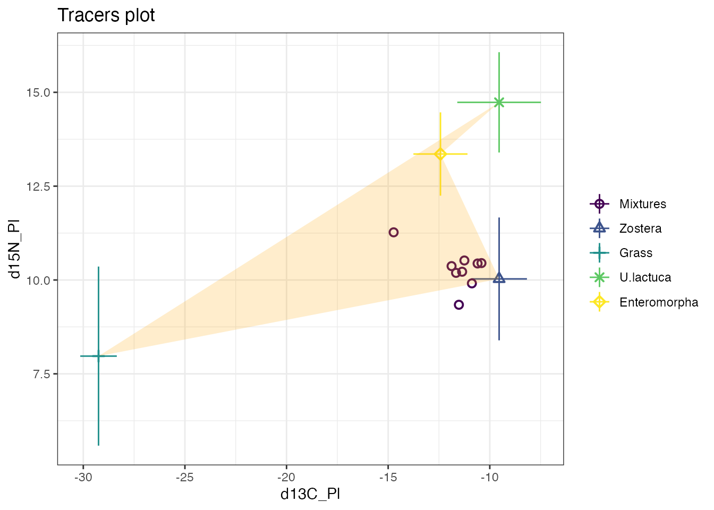
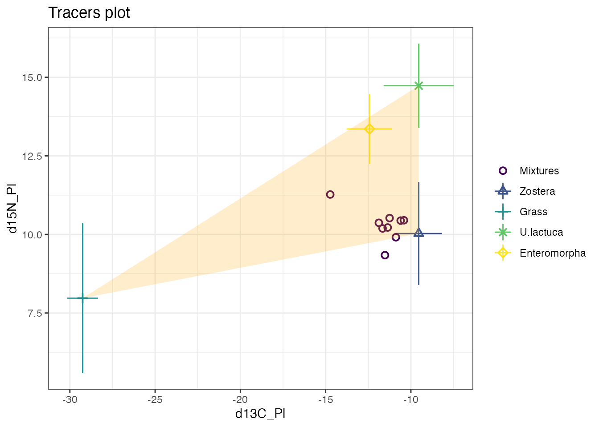
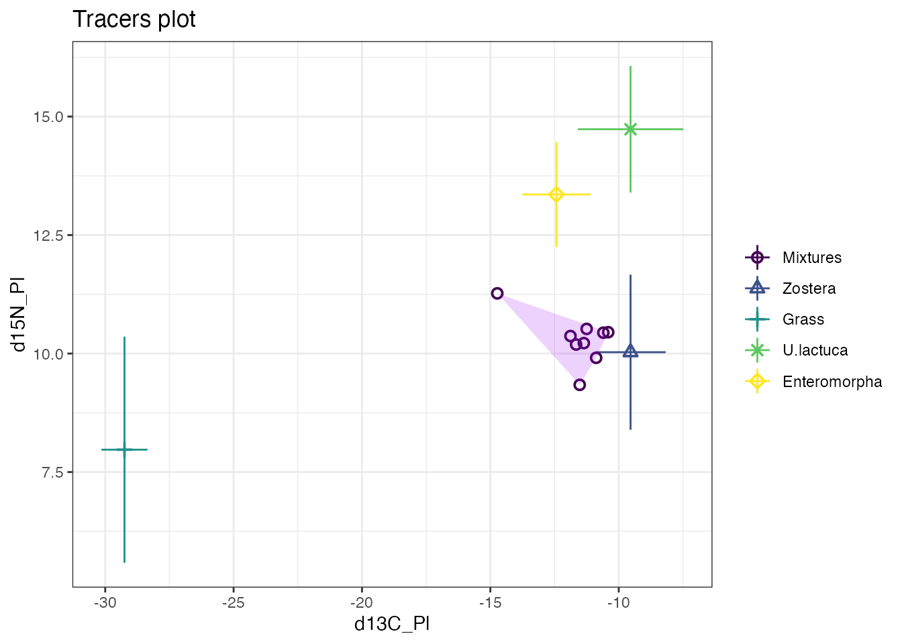
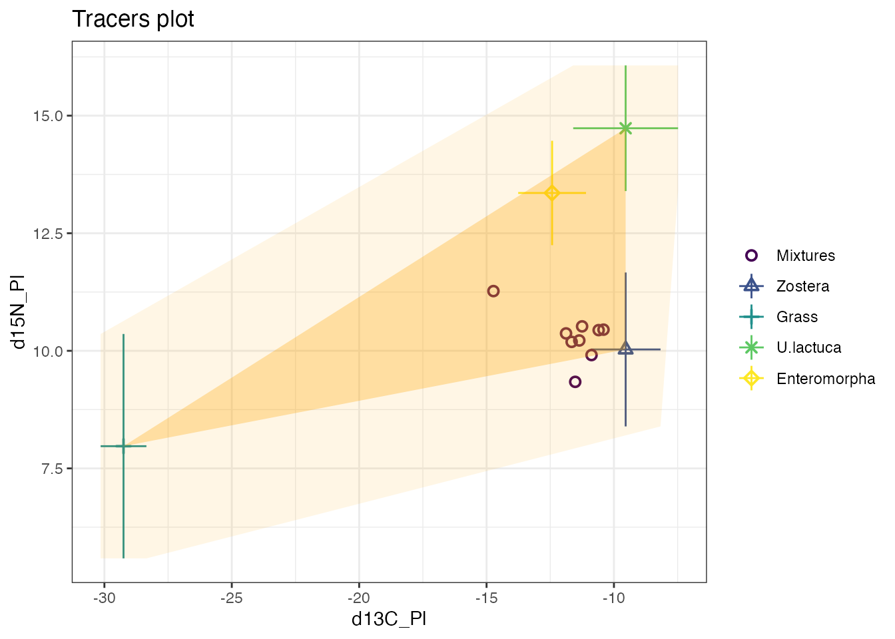

simmr: advanced plotting guide
Andrew Parnell
2023-10-02
Source:vignettes/advanced_plotting.Rmd
advanced_plotting.RmdIntroduction
Here I am assuming that you have installed simmr and loaded it with:
install.packages("simmr")
library(simmr)In this vignette are some simple examples of how to customise plots in simmr which shouldn’t require large amounts of additional R knowledge. However…
To customise plots I would recommend having a basic understanding of
the ggplot2 package upon which all the simmr graphics are
based. A good but long introduction to ggplot2 can be found
here: https://ggplot2-book.org. A short version including a
cheat sheet is here: https://ggplot2.tidyverse.org. A script which runs
through some simple ggplot2 examples is here.
In general, whilst it is possible to customise in a basic way things like axis limits and titles, very detailed customisation of plots is only possible by changing the underlying simmr code. There are different ways to do this, but perhaps the easiest is to download the relevant function from the simmr Github page, and paste it into a new script file. Then you can edit this to produce the required picture.
If you have created other examples of extended simmr plots yourself, please contact me so I can include them here for other people to see.
A basic simmr run
Consider a basic simmr run (see the other vignettes with
vignette(package = 'simmr') for what the commands here
mean):
# Load in example data
data(geese_data_day1)
# Load into simmr
simmr_in <- with(
geese_data_day1,
simmr_load(
mixtures = mixtures,
source_names = source_names,
source_means = source_means,
source_sds = source_sds,
correction_means = correction_means,
correction_sds = correction_sds,
concentration_means = concentration_means
)
)
# MCMC run
simmr_out <- simmr_mcmc(simmr_in)Customisation of iso-space plots
The iso-space plots in simmr can be customised using arguments in the
main body of the function see help(plot.simmr_input) for
details. An example would be:
p <- plot(simmr_in,
xlab = expression(paste(delta^13, "C (\u2030)", sep = "")),
ylab = expression(paste(delta^15, "N (\u2030)", sep = "")),
title = "Isospace plot of Inger et al Geese data",
mix_name = "Organism"
)
You can further customise by adding in extra ggplot commands, for example:

Customisation of output plots
The same idea as above can be used on output plots, for example:
p <- plot(simmr_out,
type = "boxplot",
title = "simmr"
)
Now customise
## Warning: Removed 2773 rows containing non-finite values
## (`stat_boxplot()`).
If you cut off a part of the graph with e.g. a ylim
command then R will provide a warning. Note that the above
ylim command actually changes the x-axis and not the
y-axis. This is because the coordinates are flipped in the underlying
ggplot code which by default uses the source names on the horizontal
axis. Here is a more complex example where I change the colours of the
boxplots:
# First extract the dietary proportions
simmr_out2 <- simmr_out$output[[1]]$BUGSoutput$sims.list$p
colnames(simmr_out2) <- simmr_out$input$source_names
# Now turn into a proper data frame
library(reshape2)
df <- reshape2::melt(simmr_out2)
colnames(df) <- c("Num", "Source", "Proportion")
# Finally create the new variable that you want to colour by
df$new_colour <- "Type 2"
df$new_colour[df$Source == "Zostera"] <- "Type 1"
# And create the plot
ggplot(df, aes_string(
y = "Proportion", x = "Source",
fill = "new_colour", alpha = 0, 5
)) +
geom_boxplot(notch = TRUE, outlier.size = 0) +
theme_bw() +
ggtitle("simmr output boxplot with changed colours") +
theme(legend.position = "none") +
coord_flip()## Warning: `aes_string()` was deprecated in ggplot2 3.0.0.
## ℹ Please use tidy evaluation idioms with `aes()`.
## ℹ See also `vignette("ggplot2-in-packages")` for more information.
## This warning is displayed once every 8 hours.
## Call `lifecycle::last_lifecycle_warnings()` to see where this warning was
## generated.
Adding in convex hulls to iso-space plots
It’s perfectly possible to add polygons and convex hulls to existing
iso-space plots. This does require a bit of hacking though, and is
assisted by use of the package ggnewscale. Starting for
example with the iso-space plot above:
p <- plot(simmr_in)
We can add a polygon around the mixtures by creating a new data frame
with the source mean values (corrected by the TEFs). We have to augment
this data frame to include some other parts of the data frame used by
the plot.simmr_input function; we can set these to
NA.
We first create the new data frame.
library(ggnewscale)
new_df <- data.frame(
x = geese_data_day1$source_means[, "meand13CPl"] + geese_data_day1$correction_means[, "meand13CPl"],
y = geese_data_day1$source_means[, "meand15NPl"] + geese_data_day1$correction_means[, "meand15NPl"],
Source = "Mixtures"
)Then we call the new_scale_color function from
ggnewscale with the geom_polygon command to
create the polygon
p +
new_scale_color() +
geom_polygon(data = new_df, aes(x = x, y = y), fill = "orange", alpha = 0.2)
If we wanted a convex hull we can use the chull function
on the first two columns
chull_vals <- chull(new_df[, 1], new_df[, 2])
new_df2 <- new_df[chull_vals, ]
p +
new_scale_color() +
geom_polygon(data = new_df2, aes(x = x, y = y), fill = "orange", alpha = 0.2)
Or if we want a convex hull around the mixtures:
# Create the new data frame
new_mix <- data.frame(
x = geese_data_day1$mixtures[, "d13C_Pl"],
y = geese_data_day1$mixtures[, "d15N_Pl"],
Source = "Mixtures"
)
# Find the convex hull
chull_mix_vals <- chull(new_mix[, 1], new_mix[, 2])
new_mix2 <- new_mix[chull_mix_vals, ]
# Plot using new_scale_color
p +
new_scale_color() +
geom_polygon(data = new_mix2, aes(x = x, y = y), fill = "purple", alpha = 0.2)
We can even do more than 1 convex hull to fully cover e.g. 2 standard deviations of the source area. This might be useful for identifying rogue mixture points.
source_means_c <- geese_data_day1$source_means + geese_data_day1$correction_means
source_sds_c <- sqrt(geese_data_day1$source_sds^2 + geese_data_day1$correction_sds^2)
mix <- geese_data_day1$mixtures
x <- c(
source_means_c[, "meand13CPl"] - source_sds_c[, "SDd13C"],
source_means_c[, "meand13CPl"] - source_sds_c[, "SDd13C"],
source_means_c[, "meand13CPl"] + source_sds_c[, "SDd13C"],
source_means_c[, "meand13CPl"] + source_sds_c[, "SDd13C"]
)
y <- c(
source_means_c[, "meand15NPl"] - source_sds_c[, "SDd15N"],
source_means_c[, "meand15NPl"] + source_sds_c[, "SDd15N"],
source_means_c[, "meand15NPl"] - source_sds_c[, "SDd15N"],
source_means_c[, "meand15NPl"] + source_sds_c[, "SDd15N"]
)
new_df3 <- data.frame(
x = x,
y = y,
Source = "Mixtures"
)
chull_vals <- chull(new_df3[, 1], new_df3[, 2])
new_df4 <- new_df3[chull_vals, ]
p + new_scale_color() +
geom_polygon(data = new_df2, aes(x = x, y = y), fill = "orange", alpha = 0.3) +
new_scale_color() +
geom_polygon(data = new_df4, aes(x = x, y = y), fill = "orange", alpha = 0.1)